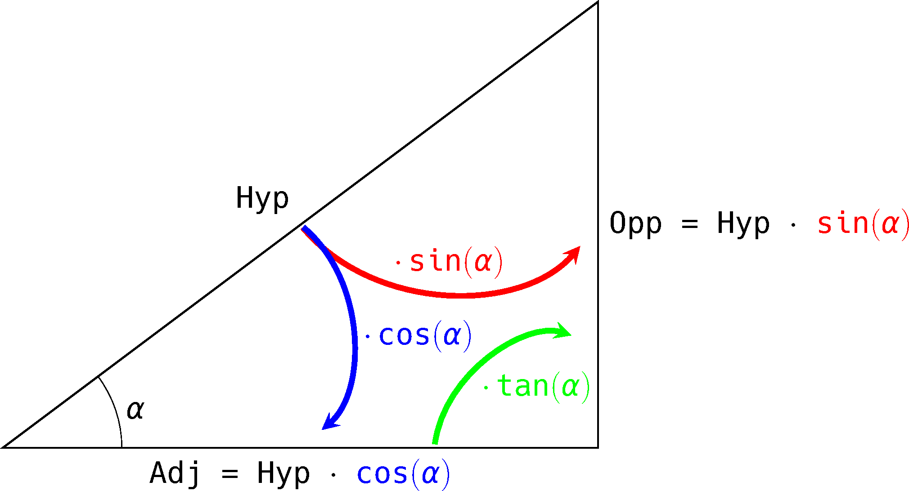

Trigonométrie : Objets d'Apprentissage
Table of Contents
1. Angles
- comprendre un angle comme un point sur le cercle trigonométrique
- comprendre les radians comme la désignation d'un angle par la longueur d'arc correspondante
- savoir convertir les degrés en radians et vice versa
- connaître la position certains angles clés sur le cercle trigonométrique
- en particulier : \(0\), \(\dfrac{\pi}{6}\), \(\dfrac{\pi}{4}\), \(\dfrac{\pi}{3}\), \(\dfrac{\pi}{2}\) et \(\pi\)
- en particulier : \(0\), \(\dfrac{\pi}{6}\), \(\dfrac{\pi}{4}\), \(\dfrac{\pi}{3}\), \(\dfrac{\pi}{2}\) et \(\pi\)
- savoir positionner un angle sur le cercle trigonométrique en se référant aux angles clés
2. Fonctions trigonométriques
- comprendre la définition géométrique des fonctions trigonométriques
- \(\cos(\alpha)\) et \(\sin(\alpha)\) comme les coordonnées du point correspondant sur le cercle trigonométrique
- \(\tan(\alpha)\) comme mesurée sur l'axe tangente au cercle trigonométrique
- \(\cos(\alpha)\) et \(\sin(\alpha)\) comme les coordonnées du point correspondant sur le cercle trigonométrique
- connaître la valeur des fonctions trigonométriques pour les angles clés:
| 0 | π/6 | π/4 | π/3 | π/2 | |
|---|---|---|---|---|---|
| cos | \(1\) | \(\dfrac{\sqrt{3}}{2}\) | \(\dfrac{\sqrt{2}}{2}\) | \(\dfrac{1}{2}\) | \(0\) |
| sin | \(0\) | \(\dfrac{1}{2}\) | \(\dfrac{\sqrt{2}}{2}\) | \(\dfrac{\sqrt{3}}{2}\) | \(1\) |
| tan | \(0\) | \(\dfrac{\sqrt{3}}{3}\) | \(1\) | \(\sqrt{3}\) | n/a |
- savoir trouver la valeur des fonctions trigonométriques d'un angle en se référant aux angles clés et en exploitant les symétries du cercle trigonométrique
- savoir identifier les angles qui ont un \(\cos\), \(\sin\) ou \(\tan\) donné en se référant au cercle trigonométrique
3. Triangles rectangles
comprendre le lien entre le cercle trigonométrique et les ratios dans un triangle rectangle

- savoir résoudre un triangle rectangle/isocèle avec les fonctions trigonométriques